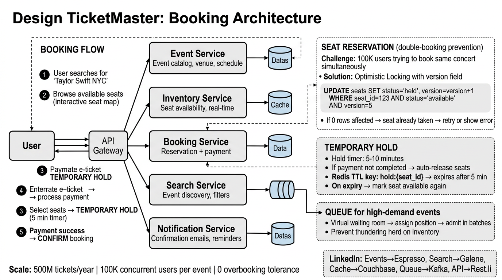

A complete deep dive into the architecture of a large-scale event ticketing platform — seat reservation, virtual waiting rooms, double-booking prevention, and flash-sale resilience.
TicketMaster is the world's largest event ticketing platform, handling everything from small local venues to stadium concerts with 80,000+ seats. The core challenge: selling a finite, non-fungible inventory (every seat is unique) under extreme burst traffic while guaranteeing zero overbooking.
We choose strong consistency for the booking path. A brief period of unavailability is acceptable; selling the same seat twice is not. This is the opposite trade-off from most social media systems.
Event browsing and seat-map views are 100:1 reads-to-writes normally, but during a flash sale the write ratio spikes dramatically. The system must handle both gracefully.

| Service | Responsibility | Key Characteristics |
|---|---|---|
| Event Service | CRUD for events, venues, pricing tiers, artist metadata | Read-heavy, highly cacheable, eventual consistency OK |
| Inventory Service | Owns the seat map and real-time availability for every event | Source of truth for seat status; strong consistency required |
| Booking Service | Orchestrates the reservation → payment → confirmation flow | Saga pattern; coordinates Inventory + Payment; idempotent |
| Search Service | Full-text search, filtering, geo-proximity, autocomplete | Inverted index (Elasticsearch/Galene); async index updates |
| Notification Service | Email confirmations, push alerts, SMS for reminders | Async via message queue; at-least-once delivery |
HELD to BOOKED with the user's booking IDAVAILABLE automaticallyThis is the most critical part of the system. Two users must never successfully book the same seat. We use a combination of optimistic locking in the database and temporary holds in Redis to achieve this.
Every seat row has a version column. When a service reads a seat, it notes the version. When it writes, it includes the version in a WHERE clause. If another transaction modified the row in between, the version won't match and the UPDATE affects zero rows — the application detects this and retries or rejects.
UPDATE seats
SET status = 'HELD',
held_by = :user_id,
held_at = NOW(),
version = version + 1
WHERE seat_id = :seat_id
AND event_id = :event_id
AND status = 'AVAILABLE'
AND version = :expected_version;
-- If affected_rows == 0 → someone else got it first
-- If affected_rows == 1 → hold acquired successfully
After the optimistic lock succeeds, we don't mark the seat as BOOKED immediately — the user still needs to enter payment. Instead, we create a temporary hold with a Redis key that expires after 5–10 minutes.
-- Redis commands for temporary hold
SET seat_hold:{event_id}:{seat_id} {user_id} EX 600 NX
-- EX 600 → expires in 10 minutes (600 seconds)
-- NX → only set if key does NOT exist (prevents race condition)
-- Check: if SET returns OK → hold acquired
-- if SET returns nil → seat already held by another user
version check and the Redis NX flag prevent double-booking. Even if one layer has a bug, the other catches it. The database is the ultimate source of truth; Redis is a fast coordination layer.
When the Redis TTL expires (user abandoned checkout), a release mechanism kicks in:
__keyevent@0__:expired. A consumer service listens, verifies the seat is still HELD (not BOOKED), and sets it back to AVAILABLE.status = 'HELD' and held_at < NOW() - INTERVAL 10 MINUTE. Simpler but slightly delayed.Users lose seats mid-checkout. Increases abandoned cart rate and frustrates users entering payment details on slow connections.
Scalpers hold seats without buying, reducing effective inventory. Popular events appear sold out while seats are locked by idle sessions.
When Taylor Swift tickets go on sale, 10 million users hit the buy button simultaneously. Without a waiting room, the system either crashes or randomly rejects users with 503 errors. A virtual waiting room absorbs the spike and meters users into the booking flow at a sustainable rate.
INCR waitingroom:{event_id}:counter in Redis. This is atomic and handles millions of concurrent increments| Technique | How It Helps |
|---|---|
| Rate-limited admission | Release N users per interval, keeping backend load predictable. N is dynamically adjusted based on p99 latency of the booking service |
| Jittered polling | Clients poll for queue position with randomized intervals (base + jitter) to avoid synchronized request waves |
| CDN-served waiting page | The waiting room page is static HTML served from CDN. Only the position update is a lightweight API call, reducing origin load by 99% |
| Connection pooling | WebSocket connections for position updates are multiplexed through a gateway, not directly to backend services |
| Backpressure signal | If the booking service reports high latency, the admission scheduler slows down the release rate automatically |
INCR counter guarantees strict ordering — the user who clicked first gets the lowest number and enters first. No favoritism, no randomness.
Anti-bot measures: Before entering the queue, users must pass a CAPTCHA or proof-of-work challenge. The waiting room also enforces:
Controlled throughput, fair ordering, stable backend. Users get a clear expectation of wait time. System sells all tickets without crashing.
Random 503 errors, database meltdown, retry storms, unfair advantage to automated scripts, potential complete outage with zero tickets sold.
The data model centers around five core tables. The seats table is the hottest table in the system — it must support high-concurrency reads (seat map rendering) and atomic writes (booking).
| Column | Type | Description |
|---|---|---|
event_id | UUID (PK) | Unique event identifier |
name | VARCHAR(255) | Event title |
venue_id | UUID (FK) | References the venue |
artist | VARCHAR(255) | Performing artist or team |
category | ENUM | Concert, Sports, Theater, etc. |
event_date | TIMESTAMP | When the event occurs |
sale_start | TIMESTAMP | When ticket sales open (triggers waiting room) |
total_seats | INT | Total capacity for this event |
status | ENUM | DRAFT, ON_SALE, SOLD_OUT, CANCELLED |
created_at | TIMESTAMP | Record creation time |
| Column | Type | Description |
|---|---|---|
venue_id | UUID (PK) | Unique venue identifier |
name | VARCHAR(255) | Venue name (e.g., "Madison Square Garden") |
city | VARCHAR(100) | City for geo-search |
state | VARCHAR(50) | State / region |
capacity | INT | Maximum seating capacity |
seat_map_json | JSON | Venue layout: sections, rows, seat positions |
lat | DECIMAL(9,6) | Latitude for proximity search |
lng | DECIMAL(9,6) | Longitude for proximity search |
This is the most contended table. It's sharded by event_id so all seats for one event live on the same shard, enabling efficient seat-map queries and transactional updates within a single shard.
| Column | Type | Description |
|---|---|---|
seat_id | UUID (PK) | Unique seat identifier |
event_id | UUID (FK, shard key) | Which event this seat belongs to |
section | VARCHAR(20) | Section label (e.g., "A", "Floor", "VIP") |
row | VARCHAR(10) | Row within section |
seat_number | INT | Seat number within row |
price_cents | BIGINT | Price in cents to avoid floating point |
status | ENUM | AVAILABLE, HELD, BOOKED, BLOCKED |
held_by | UUID | User ID holding this seat (NULL if available) |
held_at | TIMESTAMP | When the hold was placed |
version | INT | Optimistic lock version counter |
| Column | Type | Description |
|---|---|---|
booking_id | UUID (PK) | Unique booking identifier |
user_id | UUID (FK) | Who made the booking |
event_id | UUID (FK) | Which event |
seat_ids | UUID[] | Array of booked seat IDs |
total_cents | BIGINT | Total charge in cents |
status | ENUM | PENDING, CONFIRMED, CANCELLED, REFUNDED |
payment_id | UUID (FK) | References the payment record |
idempotency_key | UUID | Prevents duplicate bookings on retry |
created_at | TIMESTAMP | Booking initiation time |
confirmed_at | TIMESTAMP | When payment was confirmed |
| Column | Type | Description |
|---|---|---|
payment_id | UUID (PK) | Unique payment identifier |
booking_id | UUID (FK) | Associated booking |
amount_cents | BIGINT | Charged amount in cents |
currency | VARCHAR(3) | ISO currency code (USD, EUR, etc.) |
provider | ENUM | STRIPE, PAYPAL, APPLE_PAY |
provider_txn_id | VARCHAR(255) | External transaction reference |
status | ENUM | INITIATED, SUCCESS, FAILED, REFUNDED |
created_at | TIMESTAMP | Payment initiation time |
completed_at | TIMESTAMP | When the provider confirmed |
event_id. All seats for a single event are co-located, enabling single-shard transactions for multi-seat bookingsuser_id for efficient "my bookings" queries. Cross-shard joins with seats are avoided by denormalizing event/seat info into the booking recordHow you'd build TicketMaster with LinkedIn's infrastructure:
| TicketMaster Component | LinkedIn Tech | Why |
|---|---|---|
| Seats / Bookings DB | Espresso | LinkedIn's distributed document store with strong consistency, online rebalancing, and secondary indexes. Shard by event_id for seats, user_id for bookings. Supports conditional updates (optimistic locking). |
| Event Search | Galene | LinkedIn's search engine built on Lucene. Powers typeahead, faceted filtering by category/location/date, and geo-proximity ranking for nearby events. |
| Temporary Hold / Queue | Couchbase | Used as a distributed cache with TTL support. Replaces Redis for seat holds and waiting room counters. Sub-millisecond reads, built-in expiry, cross-datacenter replication. |
| Event Bus / Async | Kafka | All booking events, payment confirmations, and analytics events flow through Kafka topics. Guarantees ordering within a partition (partition by event_id for seat operations). |
| API Layer | Rest.li | LinkedIn's REST framework for building resource-oriented APIs. Provides automatic schema evolution, backward compatibility, and batch/finder query patterns. |
| Notification Service | Kafka + Email/Push infra | Kafka consumer processes confirmation events and dispatches to LinkedIn's email and push notification infrastructure with at-least-once delivery semantics. |
Answer: Optimistic locking with a version column. The UPDATE includes WHERE version = :expected. If the row was modified by another transaction, the update affects zero rows and the application retries or rejects. Combined with Redis SET ... NX for the hold phase, you get two independent guards against double-booking. The database is the final arbiter — even if Redis has a split-brain, the DB rejects the duplicate.
Answer: Virtual waiting room with a FIFO queue. Users get a position number via atomic INCR. A scheduler admits users in batches calibrated to backend capacity (e.g., 500/10s). The waiting page is served from CDN, so 10M users hitting "refresh" costs almost nothing at the origin. Admission tokens (JWTs with short TTL) ensure only admitted users can call the booking API. Backpressure from the booking service dynamically throttles admission rate.
Answer: The seat map is a pre-rendered SVG/canvas with the venue layout baked in (sections, rows, positions). Only the status overlay (available/held/booked) is dynamic. This status is fetched as a compact bitfield or compressed JSON — 80K seats × 2 bits = 20KB. For real-time updates during a flash sale, use Server-Sent Events (SSE) to push delta updates (seat X changed from AVAILABLE to HELD) rather than polling the full map. Stale reads are acceptable for the map — the hold attempt is the consistency boundary.
Answer: The hold timer is generous (5–10 min) to accommodate slow payment flows. If the user abandons, the TTL auto-releases. If payment succeeds, the seat transitions atomically from HELD to BOOKED. If payment fails, the Booking Service immediately releases the hold (compensating transaction in the saga). The idempotency key on the booking prevents duplicate charges on retries.
Answer: Multi-layer defense: (1) CAPTCHA/proof-of-work before entering the waiting room, (2) one queue position per authenticated user ID, (3) IP rate limiting and device fingerprinting, (4) admission tokens bound to user session (non-transferable), (5) purchase limits per user per event (e.g., max 4 tickets), (6) post-purchase velocity checks — if a user buys tickets across 50 events in a day, flag for review.
Answer: If a user selects 4 seats, all 4 must be held atomically. Since seats are sharded by event_id, all seats for one event are on the same shard, enabling a single-shard transaction. If any seat fails the optimistic lock check, the entire batch is rejected — no partial holds. This is an all-or-nothing operation at the database level. The user is shown which seats were taken and can reselect.